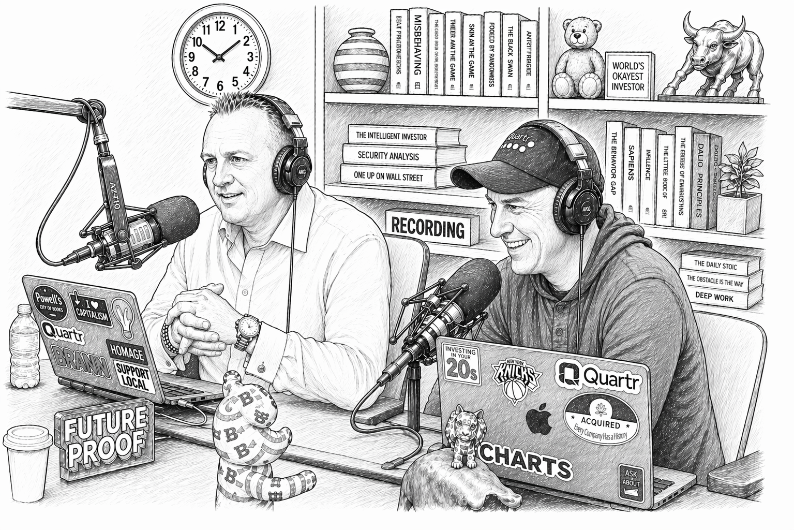

Ladies and gentlemen, welcome to What Are Your Thoughts? One of the longest running shows on the Compound Channel. My name is Downtown Josh Brown. I am your host.

I am here from rainy Dallas, Texas today. Michael, when's the last time you've been to Dallas? Two years ago, it's pretty windy. It's not windy today, but it's nice because I have to be indoors all day.
We went to this thing called the Design District last night. It's a little bit Miami, a little bit Vegas, but in downtown Dallas. How was it? We went to Carbone.
It was great. They have Delilah, which I think is from the Wynn Encore. They have one of those here. I feel like you're eating too much Carbone.
I'm Carbone, Max.
Is this three times in three months? You want to know that? I'm going to Carbone on Thursday night, New York. Shut up.
That's what it is. Is this a joke?
Are they parallel? After that. After this, that's it. Guys, we have an action-packed show for you today.
Want to mention our sponsor, which is Public. It feels like there are two types of investing platforms right now. You've got the legacy brokerages that look like they were designed in 1997. And then you've got the new wave, the ones that looked at investing and thought, this needs sports betting.
Neither seems like a great place to build your wealth, so that's where Public comes in. It's the modern investing platform for those who take it seriously, stocks, options, bonds, crypto, they have it all. That's right, Josh, and the energy they're not spending on building a casino, it's going right into AI. Public is the only platform where you can create agents that can monitor the market, manage your cash, and execute your trades.
Just enter a prompt, improve the workflow, and put your agent to work. So go to public.com slash W-A-Y-T and earn an uncapped 1% match when you transfer your portfolio. That's public.com slash W-A-Y-T, paid for by Public Investing. Brokerage services by Open to the Public, Brokerage Services Open to the Public Investing Inc., member FINRA and SIPC.
Advisory services by Public Advisors LLC, SEC registered advisor. Complete disclosures available at public.com slash disclosures. All right, Josh, the cat got my tongue. It really did.
That's how it really happens. You've been podcasting your head off, so it's understandable. Today's show is sponsored by Janus Henderson Investors, where we believe working together is the way to work better. Like combining your portfolio plans and our in-depth strategy, your valued assets and our valuable insights, your mission and our vision.
Always working in perfect harmony to find the right investment opportunities. Janus Henderson Investors, investing in a brighter future together. Visit janushenderson.com. Tim Cook stepped down and wrote a really beautiful, tremendous letter.
And it was surprising. People weren't expecting this. Do you think this was in the air?
Not my air. Right, so he took over when Steve Jobs passed in 2011, so it's a solid 15 years. And maybe that's the timing, or maybe it's more, he recognizes what Apple needs right now is somebody more decisive. Not that he can't make decisions, but he's not really known for being a hard-charging visionary.
He's been incredible, some would say, one of the best CEOs of all time. Well, the market would say expectations. Yeah, the market would say that. Throw up this chart, John.
So this is a chart of the market cap that Tim Cook added since becoming CEO. And when Steve Jobs died, there was a massive amount. He was a visionary. Apple was Steve Jobs.
Steve Jobs was Apple. It was not a foregone conclusion that Tim Cook would take them to the next level, which they did. They went to the next level. So they added $478,000 in market cap per minute since Tim Cook became CEO.
I have to fact-check this because it sounds fake. $683 million a day, and $4.8 million a week, and $20 billion per month, $21 billion a month.
For 15 freaking years. That's unbelievable. So statistically, he's the most accomplished stock market CEO of all time. And there's not even a close number two.
I remember somebody saying in 2011, when Jobs passed and Cook took over, sell Apple because the magic man is gone. Yeah, that was a blast. I guess intuitively that would have made sense. But one of my favorite sayings on Wall Street, if it makes sense, it doesn't make money.
Do you know who taught me that? No, I liked that. That's Mark Fisher.
I think he invented it, actually. And he's come out of this trading guy primarily. Say, if it makes sense, it doesn't make money. And it's almost a Yogi Berra-ism, or maybe it's a little bit Munger-esque, but there's so much wisdom in that.
If something, if I can tell you a linear story, A plus B plus C equals D, it's in the prices. How could it not be? I generally agree, but that is also the top of the mid-wit meme bell curve. Yeah, fine.
Works. If it makes sense. Do you know, Michael, what do you think the market cap of Apple was when Tim Cook took over? When Tim, it's your question.
Let's go with 190 billion. 350 billion.
It was 377 a share. So, a million split, since now it's four trillion. So he 11x'd the market cap of this company. And when the iPhone was introduced, that was 2007.
Apple's market cap was 73 billion.
So, in other words, the iPhone took Apple from 73 billion to 350 billion, which is a 5x.
Didn't 11x Cook grow the company more than the Jobs iPhone era and off a giant, much bigger base. I don't know, much bigger base. Yeah, look, it's an incredible run. I wanted to pull out a couple of things he said in the letter.
He said for the last 15 years, I've started just about every morning the same way. I opened my email and I read notes I received a day before from Apple's users all over the world.
You share little pieces of your lives with me and tell me things you want me to know about how Apple has touched you. About the moment your mom was saved by her Apple Watch. About the perfect selfie you captured, blah, blah, blah. So it's a really nice letter.
And then here's what he said about the new guy, John Ternus, who we'll talk about in a second. Quote, a brilliant engineer and thinker who has spent the past 25 years building the Apple products our users love so much, obsessed with every detail, focused on every possible way we can make something better, bolder, more beautiful, and more meaningful. He's the perfect person for the job. Ternus gave a commencement ceremony speech at an engineering college.
He's an engineer, maybe at UPenn where he came from, and he told this story about how they were building the Cinema Display product. And he wanted the screws to have 25 grooves. Nobody would see the screws. They're literally inside of the display.
He wanted them to have 25, and the manufacturer was shipping them with 35 grooves. And he stuck on that for months until final. And his comment was, is that crazy? Yeah, it's crazy.
But so what? It's also the right thing to do. This is how we designed it. This is how it has to be.
So it's not a huge departure from Cook in terms of Cook's more of an operations guy, but also very much focused on details. And I think that's part of the hallmark of Apple is not just creativity, but everything's perfect. Where they want, they want to get to the place where everything's perfect. We have a picture of him.
He's 50 years old. Here's John Ternus with Tim Cook. Yeah, he's in all their videos whenever they do the product launch. He's always there.
Here are some of the things that he worked on: iPad, every single iPad model, starting from the original through every generation. AirPods, he oversaw the development. He was the VP of Hardware Engineering, one of the most successful tech products of all time. The MacBook Pro, he's the guy that did the WWDC presentation for each new MacBook Pro.
The iMac refresh, the iPhone 12, he basically owned it. And that was hugely forward for the iPhone in general. The Apple Watch, he led the hardware development when they were launching that. And the Vision Pro, your favorite Apple gadget.
So that one didn't work out so well. Dude, the iPad, so we had this chart, we did this five months ago, where we made a chart, I should've used it tonight, showing the Apple revenue in context. The iPad did $28 billion in revenue in the previous 12 months. And at the time, it looks different today, but at the time AMD did $26 billion in revenue.
Maybe a better comparison, because this is probably similar right now, Schwab. So the iPad, which no one talks about ever. iPad, which nobody discusses, the freaking iPad did as much or more revenue than Charles Schwab in the last 12 months. It's insane. So this big Bloomberg piece about what the company wants out of their new CEO or what the shareholders want, what he's really in the seat for.
And maybe this is what prompted Tim Cook to say, it's 15 years. It's a great run. I'll step back, be executive chairman. I'll focus on relations with Trump and with China and the big picture stuff, but we need a product guy back in the seat.
This is Bloomberg. Apple is also betting that Ternus has a more decisive leadership style, something closer to Steve Jobs. Long-term colleagues describe Ternus as someone willing to make clear calls in contrast to Cook's more deliberative consensus-oriented approach. Quote, Ternus will make decisions.
If you go to Tim with A or B, he won't pick. He'll ask a series of questions instead. Ternus, on the other hand, will choose. It could be right or wrong, but at least it's a decision.
I don't know, how much of the perceived mediocrity in Apple's recent track record of innovation do you think people would ascribe to indecisiveness? It's two years to ship a genetic theory and they still haven't. How much of that do you think is just too much committee, too much bureaucracy, not enough decision making? I don't know if it's not the opposite, where Tim Cook is saying, no, no, no, that's not our lane.
Our lane is super lucrative, and we're not doing it. And I would say so far they've been rewarded for staying in their lane. There's an alternate universe where Apple has spent all this money, they have nothing to show for it, and investors are like, what are they doing? You've got this cash cow, just don't interrupt the app card.
Nothing is broken, let everybody else waste their money and we'll just be the gate, we'll just be the toll operator. Yeah. So they've done that and they've probably milked it to the greatest degree possible via services. They did try to launch a new category with the Vision Pro.
It went splat. Now they have a glasses project, which has been pushed back and pushed back. They burned billions of dollars investigating whether or not they should build a car.
People forget about that, but it's a real thing that happened. And according to the article, Ternus was against these things internally. I don't think he wanted to do the car, but you fall in line when you're not the CEO. Do you think that, let's say, I don't think this would be a massive sea change in the next 30 days, but let's play out the next year or two.
Do you think they're going to make a pivot and do something that Cook wouldn't have done if he were in the seat? You think it's going to look fundamentally different or is this more the status quo? I always think that the handpicked successor who's coming into the seat internally is there for continuity and then a little bit more of their personality will gradually shine through. But that doesn't really seem to be what happens.
And we're not going to do Berkshire today, but Greg Abel is whacking out positions. He's in the seat and actively making changes almost immediately. Buffett officially was out on December 31st. And there's already big changes in the stock holdings.
So that's something that we can see externally. So who knows what's going on internally. In this case, this is not a turnaround situation. This is not like the stock is in a 30% drawdown and has underperformed for five years and everyone's sick of it and they need a drastic change.
It's the opposite. The stock's, Tim Cook is going out basically at the high. And so I don't know why all of a sudden would there be some sharp course correction? It makes no sense.
Nobody wants it. I don't think so. So I don't think there will be. Last thing on this, Donald Trump wrote a beautiful paean to the outgoing Tim Cook.
I'll quote from it. I have always, I'm not going to do his voice. I've always been a fan of Tim Cook and likewise Steve Jobs, but if Steve was not taken from the planet Earth so young and ran the company instead of Tim, the company would have done well, but nowhere near as well as it has under Tim. Let me pause there.
What do you think?
How can anyone know? But right. I don't know if that's true, because Jobs was a home run hitter, which means a lot of striking out along the way. Listen, it's hard to see a universe in which it did better than it did.
Right. What would even define? What is better than nine trillion? What else did he say?
It's pretty funny. Most people would have paid millions of dollars to a consultant who I probably would not have known, but who would say that he knew me well. The fees would be paid but the job would not have gotten done. When I got the call, I said, wow, it's Tim Apple calling.
How big is that? He told me at the first time Tim ever called him. Parenthesis Cook. Parenthesis Cook.
Yeah. I was very impressed with myself to have the head of Apple calling to kiss my ass.
Anyway, he explained his problem. It was a tough one. I felt he was right and got it taken care of quickly and effectively. That was the beginning of a long and very nice friendship.
During my five years as president, Tim would call me, but never too much. And I would help where I could. It's cool. Have the president on your way out as CEO.
It goes on and on and on. Tim Cook had an amazing career. All caps AMAZING. Almost incomparable.
Whatever else he chooses to work on, continue to do great work. Quite simply, Tim Cook is an incredible guy. Huh. That's cool.
Yeah.
All right. Nothing to add. It's nice. Would you like me to say that?
Would you like somebody to say that about you when you step down? So that's that I had an incomparable career. Yeah, incomparable. Yeah.
All right. Trump was on Squawk this morning. You watched it.
He said, this was the quote that everybody took. The US is going to end up with a great deal with Iran to end the war. So, futures shot up when he started talking, that was at 8:30. Oil was flat at 87.
One of his quotes was, I can't believe oil is at 90 and not 200. That's what Trump said.
And I said, yeah, you and everyone else.
No one would have believed that we would be fighting a war in Iran and the Strait of Hormuz would be closed or blockaded or double blockaded, and we would have oil under $100 a barrel. So even the president himself, then he describes a conversation he had with some business leaders. And I think he mentioned Jamie specifically. Oh yeah.
Yeah. He said, can you imagine, there we were, Dow 50,000. And I said to these guys, I said, I'm sorry, I have to do some things. I have to go down to a little place called Iran.
And it's going to be tough. But I have to do it. I can't let them get a nuclear weapon. And believe me, if you think the stock market coming down because of this is bad, it'd be much worse if Iran blew up the Middle East.
So I don't know if that conversation actually happened or whatever, but it's funny. And funny, strange.
But then he said, when I get to 50, then they started asking about Kevin Warsh, who's testifying in front of Congress today to get confirmed as the next Federal Reserve Chair. And he was talking about when I get back to 50,000, not when the Dow gets back to 50,000, when I get back to 50,000, which is an affirmation of all the time that we've spent saying he really views the Dow Jones. By the way, credit to make some of Dow Jones guy too. He really views the Dow Jones as an avatar for him personally.
He's completely intertwined with where the Dow is trading. It's not quite the same as it would be. Imagine if he was like my transports, my beautiful Dow transports. Because that's real guy.
Makes sense. It could happen. He was on Twitter talking up Palantir. So he might have a view on the transports.
Oh, the last thing with Trump, they were asking about Anthropic, like there are stories where officially the Defense Department is saying Anthropic is an enemy of the state or whatever, but a lot of people in a lot of important positions are still using it and using Claude and it's a very important tool and obviously all the stuff with Mythos and how powerful it is. They were asking, I think Becky Quick was asking Trump, are you guys and Anthropic gonna be cool? And it sounded like he's getting over it. He said, quote, they came to the White House a few days ago and we had some very good talks with them and I think they're shaping up.
So he basically with the deal with Anthropic and we don't have a public stock price for this. So we don't really know how much Anthropic investors are worried about it. I would imagine they're a little bit worried about it.
But he thinks there are a lot of leftist people there who are anti-military and wouldn't bend the knee when the military demands, and they were like, no, we don't do that. And I think that sent him into a rage, but it sounds like they're figuring it out. So if you're... SK Telecom is the public proxy.
It's SKM. It's still going higher. Yeah. I think that's a concern that's coming off the table.
Anthropic is too important and too powerful and can't actually yank its use away from people that are sitting in these seats because there's just a level of technological power there that we need. So that was good news. Did you see the Tom Lee clip? I think this was yesterday, the middle of the afternoon.
Tom is saying, what are we playing this? Yeah, that's good. Whether it's in tech, healthcare, or financial services or FinTech, that's really US companies. And I think there was an argument the USPE should derate, but the war has exposed that the US multiples should be going up.
Really? So that could be accounting. We could get both earnings and multiple expansion this year? Yes, I think once we're through, this is still going to be a very tricky year because we have a new Fed chair coming in the market.
It's going to test that Fed chair. But once we get through that subsequent turbulence, we were probably entering an 18 to 24 month period that might be one of the best we've ever seen in our life.
He's saying, hear me out, what if this market rallies furiously? He's basically saying, not only have multiples contracted, they actually should be expanding. Retail investors have not come all the way back into the market yet, and international investors still want the growth that they can only really get in the S&P 500. And earnings are accelerating.
Earnings are accelerating multiples at the same time should be expanding. I think he means if Warsh is more of a lower the rates Fed Chair and or oil prices come down, why would multiples expand? We are going to look back maybe in six months, maybe right now. At the time that the tech premium disappeared and said, I can't believe we didn't pull the trigger there.
Nick said, well, yeah, I do. Some people did. I do. So some people pulled the trigger, but yeah, a lot of people were just, I don't know, the Mag Seven, it's so big, these companies are so notable and everybody is so familiar with them, that the price action is really the thing that changes people's minds about them more than the fundamentals.
Yes, because when we were saying a couple of weeks ago, Meta is trading at 16 times forward earnings. I guess what? If that multiple stayed, if over the next few years, the giants have a market multiple, the narrative will be, well, yeah, at $5 trillion for NVIDIA, why would it have a premium? How big do you think it could be relative to the stock market?
Or if the multiple on Meta shoots higher, because it gets re-rated higher, and same with NVIDIA, the narrative will be, obviously, these are the best companies in the world at the forefront of an evolution. Why wouldn't they trade at a market premium? So we just follow the price, we just do. Everybody does.
It's, what is the price doing? That'll shape how I color my views because I can't help it. What did you think about that last statement? We could be looking at, what did he say?
The best period over the next 18 to 24 months, one of the best periods in history. Yeah, I could see S&P 10,000. Holy shit. Why not?
One seven. S&P 10,000 within 18 to 24 months. Yeah.
Oh my God, people are going to be losing their minds. I mean, I don't think it's going to happen, but it's 30% higher. We can't rally 30% in two years. You kidding me?
We've been doing that. We've been doing that. So that's consistent. It's just, I don't think it's on a lot of people's radars that that would even be possible.
I don't think so. All right, let's talk about what's happened inside of the stock market rally. So Warren Paz has a chart. Warren did some great stuff here.
He says, one year out from a 10% 10-day rally,
The S&P 500 was higher by 20%, 19% on average. And in 16 of the 21 cases, the S&P rose by 10%. The market was negative in only three cases. And this was all in the early 2000s by the dot-com bubble.
And a lot of the days that I'm just guessing that, try to please, a lot of those 10% 10-day rallies came around the Russian currency crisis, LTCM, so 1998 levels and maybe a little bit later. But I thought this was really interesting. So there's a lot of talk about what was really unusual about this market is that normally the market takes the stairs up and the elevator down. This time, it was the opposite.
The market really did take the stairs down. And it was just, why won't the market freak out already? Normally when you start to roll over, you have a whoosh. There was no whoosh.
There was no 2% down day, not even. So the market took the stairs lower and it took the elevator back higher. And it did so from not deeply discounted levels. And most of the time, when you have the type of rally that we've seen recently, you're in a bear market.
So look at this chart that Matt made.
What we're looking at here is the light blue line of the SP500 drawdowns.
The orange line is the average of the red dots. And the red dots are all of the times where you see a 12% rally in 13 days, which is what just happened. It's happened 38 times. And notably, you see it in bear markets.
So the average drawdown, when this type of rally happens, is 26%. What were we down? What were we down max? Nine.
And unfortunately, the only other time when this happened that just says what it is was the top in 2000.
Yeah, there's so much more FOMO than there is fear in this market. The chemical balance between those two things, there is just so much more fear of, oh my God, it's going to take off without me again. I just think that no matter how high the VIX goes on any given day, and no matter how scary the geopolitical headlines get, people are just so much more worried about, oh my God, if this thing runs to 7,700 and I'm in cash,
That's really what's, that's really the feeling that's taken over. And with good reason, every single sale looks dumb. For years and years and years and years, every single sale looks stupid. And people just, they cannot tolerate the possibility of that happening.
So they come in quicker and quicker and quicker. And I don't know what changes that. I don't know what changes that paradigm that we're in, but who could deny that that is the predominant mentality in the market these days? That is what breaks that at least temporarily would be a failed new high.
Yes. And that would happen because you are entering a weakening economic period, weaker profits, weaker margins. That's not happening. So you have this perfect storm of people that were underinvested, too bearish, all-time highs in the earnings, and then the prices followed.
Making this rally more remarkable is that we're in a buyback blackout, Josh. So this is from Goldman Sachs via the daily chart book. We currently estimate 98% of corporates are in a blackout as of now. April tends to be a light month on our desk, given the blackout.
So they're doing this without the help of corporate buybacks. And furthermore, we know that retail buying tends to be slowing the first half of April before inflecting higher because of taxes. Now, there was some funky stuff with taxes being a little bit lighter this season, refunds being a little bit higher. But nevertheless, this part of the year is not super supportive of retail investors or corporations buying a lot of stock.
And yet, we still had one of the strongest rallies that we've seen. Do you remember, do you remember we did this on the show? I don't know how long ago it was. But I was talking about tax season having a real impact, the run-up into April 15th having a real impact on investors and flows.
It's a fact. No, it's a fact. But a lot of people, or somebody said, yeah, but everyone knows that. It's every year.
And I'm like, yeah, I know, but still. So you're right. You're right in that competition, right? You would think that if everybody knows that the market should adjust, but it doesn't.
Over the last 35 years. And I think that, I think that over the last few years, I think about March as being an annoying month where annoying stuff happens. And when I did this year, there was obviously a war, which is not what you have every year, but people do actively pull money out of their brokerage accounts in the run-up to tax day. And I understand that everyone knows it.
And I understand that it's every year. But it still has a visible and visceral impact that can be both seen and felt. It's just one of those things that, yeah, we all get it. And still, there's an evident change in behavior when the calendar shifts from February to March.
I don't have the data, but I have the life experience and you can take my word for it. Let's keep going.
What's this next one? We can skip it.
You want to do the NDX streak? It's longer than 11 days. I think it went 13. It was 13.
So we have how many times? It looks like a dozen times or so of the Nasdaq going up 11 consecutive days and it's higher one year later every single time. So not a sense of a hundred, but it is what it is.
I want to talk about something weird that happened. I want to talk about something weird that happened last week,
where JP Morgan was talking about its AI cash management product or something that seemed so banal on the surface, but it had a real impact. This is from Barron's.
On Charles Schwab's Thursday earnings call, CEO Rick Worcester, a friend of the show, not to brag, talked at length about how artificial intelligence can improve efficiency and boost growth. Investors, however, were more focused on AI's potential to disrupt Schwab's reliance on low-yielding sweep cash for a significant chunk of its revenue. And I know we're going to look at Schwab's earnings later. So let's not step on that.
The stock fell almost 8% on Thursday. Yeah. And Barron's says investors weighed Schwab's strong first quarter earnings report against news that JP Morgan Chase was developing an AI Cash Management Tool, which raised the specter of new competitive pressures on clients' cash holdings. Other wealth management stocks also tumbled.
Raymond James, LPL, both fell a lot.
You know what, the nonsense? So that's what I wanted to get to. Do you believe that investors sold shares of Schwab? I do not think AI cash management is going to hurt their profit margins.
I do not. Now, here's why I don't think that. So I listened to the JP Morgan call and they mentioned the AI cash thing. And I asked the quarter AI thing.
I said, what is this stand for? And it was their cash AI product. The reason why I don't think this impacted Schwab is because JP Morgan reported on Monday, April 13th. Schwab stock ripped on Monday.
And it ripped on Tuesday and it ripped on Wednesday. Okay. And then Schwab reported earnings and the stock got hammered. Now I, like many other people, were left wondering why did the stock fall 8% or whatever it did because it was not a bad quarter and they were asked about it on the call.
And is that part of the reason why the stock is down? I'm sure it is because Schwab is a bank and half or more of their revenue is from that interest income, the difference of what they pay you versus what they keep. So yeah, it matters. I just don't think there's that 3.1 billion in the Q1 report was net interest revenue.
And that's about half of the total revenue of six and a half billion. So half of Schwab's revenue is coming directly from cash sweep. And is it possible that the market had a delayed reaction to the news, I suppose, but it was three days later that Schwab was ripping. The analyst at Piper Sandler agrees with you, doesn't think JP Morgan's AI cash tool will have an impact on sweep cash in the short term.
But then here, speaking on JP Morgan's Tuesday earnings call, Dimon was optimistic about this disruptive potential for his bank's forthcoming AI cash tool. This is Dimon. He says, quote, Jeff Bezos always says your margin is my opportunity. And I agree with that.
We're trying to look at the blah, blah, blah, blah. All right. So the thing doesn't exist. So it's a moot point until it actually comes out.
That's the important thing. But the stock market doesn't work that way. The stock market sees a new potential threat and adjusts immediately. And it wasn't just Schwab.
Again, LPL fell, Raymond James fell. I don't know if people are afraid JP Morgan will have this thing where utilizing AI, it for some reason, is able to siphon client assets from these places by telling people you're not getting enough interest on your cash balance. Is that the way you choose to get a work? No chance.
So the idea is that interest comes to be involved with JP Morgan. People are going to go move their accounts and show up. Give me a break. Give me a break.
And maybe JP Morgan is going to do this for some of their select clientele. Yeah, they're rolling out to everybody. They're just nonsense. All right, you're up.
All right, so let's do some earnings stuff. So Netflix reported another, what I thought was a very good quarter. We say the quarter ever. I said last week that I think Netflix is going to an all-time high and wouldn't it be funny if the stock got killed.
And yes, haha, LOL, it did get killed. So the stock, the stock fell 9% after earnings and it has had no bounce. And I got to be honest, so I bought, I bought Netflix, not as a trade, okay? The stock is acting really shitty.
It fell 9% after earnings, no bounce, followed through selling the next day, followed through selling today. The market does not like what's happening. I think it's a combination of a lot of things, just the competition is super intense. And YouTube is obviously the big one.
But let's stop the chart. So record revenue, you saw a couple of years of stagnant revenue and mass acceleration. Alex Morris has, so here we go, there's some call. Q1 revenue grew 14%.
We continued to project 2026 revenue of whatever it was, so guidance didn't change.
Their ad revenue platform is at a $3 billion run rate up from basically zero, not bad.
Alex Morris, but here's a chart. The third sub, share of US streaming TV. So Netflix is going down just on the TV, the share, and YouTube is going up. And this is it.
This is the fight. It's YouTube versus Netflix. There's no more streaming wars with Disney and Hulu and all that other stuff. The growth rates at most now, Paramount Warner Brothers will be formidable as they get all those things packed into the same app and, you know, you have much more aggressive people running things like HBO, but their front of me is they do business together.
Of course, it's an ecosystem, but that could be a bigger competitive threat, but I agree with that chart, right now those are the two lines to watch, YouTube versus Netflix. And YouTube is not obviously, forget about the sheer size of it and the financial wherewithal they have to compete, none of the other streamers can.
They're getting into a lot of lanes that Netflix is in and then vice versa. See, I think Netflix investors are spooked. Reed Hastings left the board similar to Steve Jobs, but they are saying, hey, wait a minute. You guys tried to buy WWE or that was weird.
We didn't like it. Yeah, you got the big three billion dollar cash infusion, which is cool, but what's going on? How concerned are you and the market, the market is just not buying what they're selling right now, but I do want to point this out. This is interesting.
Alex said to frame just how far Netflix has come over the past 10 to 15 years, because there was a time 10 years ago where Netflix was spending, I remember the number, $7 billion in content and they were hemorrhaging money and it was just, how was this? How are investors buying this stock because no sense? Well, they won. That's $16.2 billion of fiscal year 26 EBIT exceeds the total adjusted operating income of all of Walt Disney streaming theatrical linear theme parks experiences.
Netflix is earning more money than Disney. Yes. And that's why it's a half trillion dollar market cap. But look, the street did not like the street.
People did not like the guidance because the guidance was weak. And the stock had run up from 70 back to a hundred, back to 106, 107. So now it's back in the 90s. I'm actually, I had buy, I had buy limit orders in at 94 and up 92.
I think I got hit on the 94 one. So I own it under a hundred and in the low 90s, I'll lower my average cost. I haven't decided what I'm going to do with the position. It's not a big one for me.
The stock, the stock is broken right now, but I am, I think investing in this one, but we'll see. I think the last thing I want to say on this, nobody downgraded it.
So analysts were bullish to neutral, but nobody cut it, which I thought was interesting. Here's a couple of selected quotes from some of the big analysts covering it. Mark Mahaney titled this note, Lights Camera Quality Compounder. Maintained his rating.
No change to the long thesis. Quote, a high quality asset and global leader in video streaming.
He highlighted the fact that management is not using macro trends to sandbag on ads or subscriptions. So they're at least maintaining guidance. They're just not raising it. William Blair outperform, talked about the lack of a four-year raise was the problem.
Yeah, no shit. Wedbush acknowledged Q2 guidance was softer, but maintained the four-year guidance suggests strong second half, always about the second half. Last one. No, but I love the guidance because now the expectations have come way down.
Nobody's expecting a big second half. The World Baseball Classic was their biggest single day of signing up for Japan. They're doing more stuff in live sports. They're going to do more with the NFL.
They're going to be earning a lot more money in the next three years than they are. Two price target raises after the quarter. So you don't normally see a stock fall 10% and two analysts actually raised their targets, but that's what happened. Justin Patterson at KeyBanc went from 115, went to 115 from 108.
Oh, he did that right before the earnings report. Oops. Piper Sandler raised their target. They went from 103 to 115 after and maintained their overweight.
But I don't have those comments. All right. Let's do Morgan Stanley. Let's do Morgan.
Morgan Stanley, we've mentioned a million times over the last couple of years as being the monster winner, and I never bought this stock. I feel like an idiot. This is the last year of Morgan versus the XLF.
Holy shit. Up 80% versus 14. They're running away with the ball. So, and it's not all wealth, but it is where the majority of their winmanship is coming from.
The net new assets of $118 billion in the quarter, $54 billion of that is fee-based. They were asked about private credit, of course. They said that also only 5% of the AUM, private credit is just 1%, so credit to them.
Look at this chart. Talk to a Morgan Stanley advisor. Well, it's after China, I know. I know.
I guess it's stuffing as much of these things into their clients' accounts. I'm guessing. I'm guessing. I promise you.
Yeah, I know. Well, these are the promise. I promise you, in the ultra high net worth segment, the entire day is spent on private credit and private equity, the entire day. I talked to senior advisors there.
The clients want it. They want to sell it. It's a match made in heaven. These are people who don't need access to their capital tomorrow.
I agree with you. Not saying that it's not happening, but, but, dude, it is 5% of their AUM. That's a fact. They're not lying.
Okay. Look at the, look at the dark blue line. Look at that growth. The red line or the orange line is showing a wealth management essentially the total revenue.
It is about 45%.
They're jamming. They're kidding us. This is the greatest chart off. This is the greatest wealth management funnel ever built on God's green earth.
Effectively, what James Gorman began and now Ted Pick is continuing is just this thing where they acquire businesses like E-Trade and like the collection of things that's become Morgan Stanley at Work, which is how you understand your stock options, you log in, you can see what you're invested, et cetera, et cetera. They've bought a lot of businesses like that and they always find the way to funnel the clients who are using those services toward their financial advisors, toward their wealth channel. They're the best in the world at it. And they've done it to the largest extent.
They've far outpaced anybody. I don't even know who you would say is their rival in that. Maybe Wells Fargo. But nobody is better at this than Morgan Stanley is my point.
And I think they said the wealth channel that Morgan Stanley took in 20 billion in assets in the quarter. Did you read that? Did I share that with you? 118. What's that? 118.
What was the 20 billion though? It was, I don't know, it was 54, so to your point, $118 billion of total assets, 54 of it fee-based. So the other 50-something, whatever it is, or 60, I guess, is company stock, for example, that will ultimately find its way into a fee-based account. Yeah, no, listen, they're telling it.
They realized when they bought the rest of Smith Barney that they didn't, they had a joint venture coming out of the great financial crisis because Citi needed to offload assets. So they offloaded Smith Barney, which was their wealth business, into a joint venture with Morgan Stanley. Morgan Stanley had the opportunity in tranches to buy more of it than more of it then they just swallowed the whole thing. Because Morgan Stanley understood 15 years ago, 18 years ago now, that wealth is literally the steadiest best business on Wall Street.
They were early to see the potential. And they are the best executors there. And as a result, they are literally making it rain and they take all these other activities, investment banking, trading, servicing hedge funds. Whatever they do, they find a way to funnel people into the wealth channel.
It's very impressive. So that's why that stock has worked. Schwab total client assets increased 19% year over year to 11.77 trillion. Not bad. $140 billion in the first quarter
core net new assets, 1.3 million, 1.3 million new brokerage accounts. I mean, just unbelievable.
This stood out to me. Margin loan balances increased 13% including 21 billion dollars. So 21 of the 126 of margin balances were related to long/short strategies implemented by our RIA clients like us. Yep.
Well, this is an area now where Schwab is going to advance because Fidelity is sort of paused. They've pulled the throttle back and into that void, you're going to see Goldman, you're going to see Schwab. You're going to see all of these other brokerage custodians want to facilitate this business. It's highly lucrative.
There's a lot of trading activity and there's a ton of client interest, there's a ton of RIA interest.
The margin loan balance is overall being at $126 billion, up 13% versus year end 25. On $12 trillion, that sounds like nothing. Billion, isn't it? No, isn't it?
No, on the base of a trillion.
Isn't that somewhat market related anyway? Like margin balances grow in line with the growth of the nominal value of the stock market. It seems obvious to me. So there was a chart in their report showing the amount of revenue per dollar of client assets, and they're like a fraction of Morgan Stanley, to which I thought, yeah, this is why Schwab stock is doing what it's doing, and Morgan Stanley's stock is doing what it's doing, and it sort of reminded me of, it was analogous to, in Netflix's report, they spoke about the price increase, and no churn there, not surprisingly, and they were bragging that per minute of watch time they are by far the best value.
And investors are like, yeah, we don't like that. It's not good. It's not great. You're actually sort of, you don't want to be the lowest cost provider, the best value.
So they have to say that politically. So they have to say, yes, we raised prices, but consumers are watching so much Netflix that the increase works out to pennies per hour of TV watched, which is true. And that's their justification for why they should be raising prices. It's very clever, but you're right.
That's, that's being, that's landing on two different audiences. Correct. Lands very well on the consumer audience. The street is like, raise prices again then.
Right. This was the best quarter in Schwab's history. You know, they're doing great. I feel like every quarter is another record. 1.3 million new brokerage accounts for the quarter.
So where do they keep finding millions of people to open their first brokerage account? That's impressive.
Follow your guidance. They raised it. They raised it. Not good enough.
Launching crypto, does anyone give a shit anymore? I don't even hear teenage boys talking about crypto anymore. Is that going to be a big business at Schwab or is it just, yeah, we have to have this because everyone else does. I think they got around to it.
But yay. Now what?
Just providing more value to their customers for those that want it. Yeah, that's a value. All right, 15 times forward earnings.
Yeah, it's a below market multiple. I probably as it should be. It's a great company, should, you think it should be. Yeah, great company, growing 5 percent.
What, what did they say they were growing? I don't want to misquote them. Whatever. It's a great company.
It should, I think people just don't like how they, I think there's overhang with the cash management business. I think there's just people don't love that that's such a big part of how they make money. And that's why it's 15 times. An annualized growth rate of 5.4%.
What should I trade at? It's a bank. It's a great company. Right.
Right. Okay. All right. I'm going to make the case two, three.
First, before I make the case for small caps, every time we get a sell-off and a subsequent recovery, it's a great opportunity for you to reassess what type of investor you are, what type of trader you are, what type of market participant you are. You like everybody. Yeah, and it's okay to be doing something different in your taxable brokerage, funny account, fun money like I do, with Netflix and Sound the Bottom Black, so whatever. I've had some winners in here, but that's okay.
But with your real money, make sure that if you did something stupid or something that you regret or that looks dumb in hindsight, don't put yourself in that position. You only know your risk tolerance after the fact. Unfortunately, right? Like everybody has a line and sometimes you don't know if you're too close to it until you get a bear market or sell-off.
But good opportunity to remind yourself what risk of close time. I didn't mean to bring a bell on that comment, but it was very apropos. Okay. So I want to make the case for small cap stocks.
First, I'm bringing you a weekly chart. I don't love the look of the chart, but a weekly chart of the Russell 1000, 2000, excuse me.
And this was in a bear market for a couple of years. And we didn't really spend a lot of time talking about it. Look at this move. But it peaked in the winter of 21.
And it didn't take out new highs until recently. So the bigger the base, look at the daily move. I mean, this looks super duper healthy. Look at these guys.
And within the Russell 2000, specifically, I think it's important to know what you own.
There are a lot of industrials. That's the biggest piece of the pie. There's a lot of healthcare. There's a lot of financials.
This is actually a pretty diversified index. Now, I know a lot of people dunk on the Russell 2 because a lot of it is unprofitable. So fair enough, I just wanted to show you the composition of it. But if you zoom out, actually, so let's look at the relative performance.
Next chart please. This is the Russell 2000 versus the S&P 500. And dude, this looks clean. You would want to be long this.
It actually looks like it's snapping a downtrend. I get really, it really does. And if you look at other areas, I'm not saying that the Russell 2000 is an end-all be-all. In fact, I'm probably saying it's not.
I want to share one on the chart of you, the chart for you. Look at the S&P. This is the Invesco S&P Small Cap Tech Fund versus the XLK.
Look at this bottom, dude. This is a rip. You know what this is? To me, this is the handoff from the AI hyperscaler CapEx theme to the beneficiary theme.
The stocks in the Russell 2000 or the S&P Small Cap 600 or however you want to slice and dice it. These are the companies that are the customers for all this AI stuff, and they're spending all the money on all this compute and the tokens and the services and the AI software models. They should be the buy here because they should be benefiting from all the money that they're now diverting toward AI in their tech budgets. And I think we all know this, but sometimes it gets lost.
When we're talking about stocks and the prices in the moves, naturally, we're talking about it in the context of what's happening today. Of course, always. Okay. But we also know that the market is forward-looking.
And I think part of the reason why the handoff has happened is because the market is looking forward to eventual rate cuts. And the small names are way more exposed, way more punished by higher rates than the large names. And I think that's a large part of the story of why they're working. And we'll start to read those stories next year.
Well, if you like small caps, have that microcaps. Dude, they're on fire. Are they up 80% or something? So I shared, I shared this with you guys from the, from the, I couldn't pull this.
So the Russell Microcap Index, I think it was in debt. If you think the Russell 2 isn't great in terms of profitability, wait till you see the micro, but microcaps over last year. And I understand the, we're going off the bottom, but nevertheless, I'm measuring one year. Over the last year, the S&P is up 36%.
The micro is up 75. 75. Versus 36. Just for fun.
I took a look at the top 10 market cap weights in the IWC. This is the iShares Microcap ETF. Tell me if you've ever heard of any of these. Apply Digital, Praxis, Energy Fuels, Cipher Mining, Collegium.
Yeah, it sounds bad. Centrus Energy. Terrible Wolf. Terrible Wolf.
Vistagen. Cellcure. That's actually a value stock. Tutor Perini Corp.
No. All right. Three of those are crypto miners. Okay.
So I don't. Maybe Michael Cat, who's our friend, the microcap guy, our friend Ian Castle, I know we're gonna have him back on at some point, and maybe he could tell us about this furious microcap rally, which I would hope he's benefiting from. It's pretty crazy. Yeah, they're going.
They're going. So I'd love to check back in with him at some point this year. All right, I have a mystery chart and then we'll get out of here. Put me up.
All right, Dow component.
I should know this. I can't, I don't want to tell you this sector because in the Dow there's like two for every sector, it's like Noah's Ark, and I'm just gonna be handing it to you. Okay, oh man. I gave you the price.
Oh, oh, oh, is this Goldman? No, no, no, it's not a financial stock. Oh, come on, you dumb bald idiot. Oh, man, I should know this.
I just don't. What is it? It's one of the biggest names in the Dow. What is it?
Veal.
Oh. Yeah. Caterpillar. It's great.
Look at this. Look at this chart. Man. Holy shit.
Is this a view? Is it right? Yep. That's what I wrote.
Sean and I wrote this up last week as an impending breakout that obviously happened and gone. It's up four acts in the last couple of years. Gone. It's been on.
It's been on the best stocks in the markets list since last July, has never fallen off. Even during the recent unpleasantness around like Strait of Hormuz shit. The stock never even got close to its 200 day. So it's been on the list the entire time.
And Sean and I have referenced it. But you know, we write these spotlight columns on individual companies every Thursday. Just never got around to it. We wrote a Deere instead.
Deere was up like 13%. This thing was up 80%. Never got a lot of money. No, writing about it for the column.
I'm saying because we're spotlighting companies. So it was like, Deere or Caterpillar? Screw it. Let's write up Deere.
So both, both run the list. Deere has been on and off the list. Caterpillar is just absolutely perfect. I have, I have a couple of more Caterpillar charts.
Let me just put them up and then we'll get out of here. This is the technical. Look at, look at that 50 day. It tussled with a 50 day for like 10 days and the buyers just took control immediately.
Look at the distance from the 200. It never scared you at any point since it got on the list in July. That's like the dream. That's the dream.
This is the dream uptrend and it's continuing today. But you know what, these, this is a $400 stock last year. These are always, these are always easier in hindsight, because of course, next chart, you know what I mean? I want more.
Yeah. Well, I don't even know what am I showing you here? Oh, this is like a back to 27 since a five year. This monthly, this monthly, just a rocket.
All right, is that all I have? That's it? Oh, this is price chart, very long-term, parabolic. Can't really buy it here without a stop.
No. If you buy it here without a safety net, you're not actually an investor, you're a maniac. But worth pointing out nonetheless. All right, guys, that's it from us.
Thank you so much for joining us. We appreciate you for those of you who came to the live for you on YouTube tonight. You guys are the very best. We appreciate all our pounders.
Make sure you tune in tomorrow on the edition of Animal Spirits of Michael and Ben. We'll do a new Ask the Compound where Duncan and Ben take your questions live. And then at the end of the week, we'll have an on the edition of the Compound in France and two very special guests coming on together. It's going to be an absolute flat house.
I can't wait for you to listen. Thank you guys so much for joining us. We love you. We'll see you soon.
Ritholtz Wealth Management is a registered investment advisor. Advisory services are only offered to clients or prospective clients where Ritholtz Wealth Management and its representatives are properly licensed or exempt from licensure. Nothing on this podcast should be construed as and may not be used in connection with an offer to sell or solicitation of an offer to buy or hold an interest in any security or investment product. Past performance is no guarantee of future results.
Investing involves risk and possible loss of principal capital. No advice may be rendered by Ritholtz Wealth Management unless a client service agreement is in place.